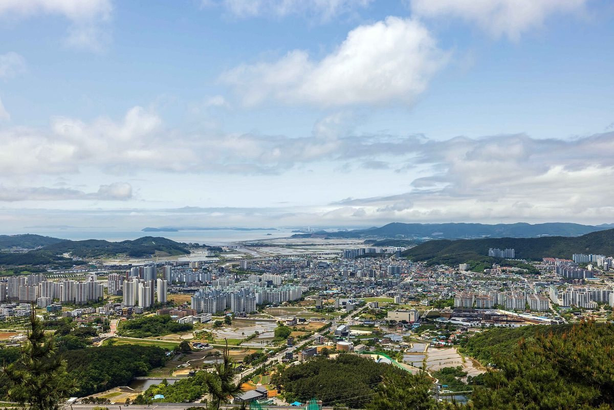

보령시, 장동혁 국민의힘 대표와 정책간담회…공공주도 태양광·해상풍력 집적화단지 육성 건의

석탄화력 단계적 폐쇄 대응 제도 개선도 요청…폐지지역 특별법 지원 소급 적용·안보전원발전기 지원 근거·미래대응기금 배분 기준에 피해 영향 반영
충남 보령시가 지역구 국회의원인 장동혁 국민의힘 대표(보령·서천)에게 공공이 주도하는 태양광·해상풍력 집적화단지 육성을 주요 과제로 건의했다. 장 대표는 22일 보령시청에서 엄승용 보령시장, 성태용 보령시의회 의장, 김현이 충남도의원 등과 정책간담회를 열고 민선 9기 주요 정책과 지역 현안을 논의했다. 보령시는 에너지전환 국가전략사업 추진과 집적화단지 육성을 비롯해 보령~대전 고속도로·국도 77호선 등 광역교통망 확충, '2027 보령 방문의 해'와 보령머드축제 30주년 사업에 국회 차원의 관심과 협력을 요청했다. 석탄화력발전 단계적 폐쇄로 일자리와 지방세수가 줄고 지역경제가 위축되는 데 대비해, 기존 석탄화력 폐지지역에도 특별법 지원을 소급 적용하고 안보전원발전기 지원 근거를 마련하며 미래대응기금 지방계정 배분 기준에 폐지지역 피해 영향을 반영해 달라는 제도 개선도 건의했다. 집적화단지의 규모와 위치, 사업 주체는 이번 건의 내용에서 알려지지 않았다. 장 대표는 같은 날 유승광 서천군수 등과도 만나 국립 해양바이오 산업진흥원 설립과 농어촌 기본소득 시범사업 등 서천 현안을 협의했다.
시민에너지 관점
석탄발전소가 떠나는 보령이 그 빈자리를 채울 산업으로 재생에너지 집적화단지를, 그것도 공공주도 방식으로 내세웠다는 점은 에너지 전환을 지역 회복의 기회로 삼으려는 시도로 읽힌다. 다만 공공주도가 곧 주민 소유를 뜻하지는 않으며, 설계에 따라 주민은 보상과 민원 처리의 대상에 머물 수 있다는 우려도 나올 수 있다. 독일의 지자체 공기업 슈타트베르케가 여러 도시에서 지역의 전기와 열을 맡아 온 것처럼 공공이 사업의 틀을 짜되, 발전소 지분과 수익의 일부를 석탄발전소에서 일하던 노동자와 주민, 지역 협동조합이 나눠 가질 때 일자리와 세수를 잃은 지역에 새 자산이 생긴다. 집적화단지 구상이 구체화될 때에는 규모와 입지보다 먼저 주민 출자와 이익 배분 방식을 계획에 담아야 한다.
출처: 충청타임즈 2026-10-25 오종진 원문 보기
保寧市、国民の力のチャン・ドンヒョク代表と政策懇談会…公共主導の太陽光・洋上風力集積化団地の育成を建議
石炭火力の段階的廃止への対応として制度改善も要請…廃止地域への特別法支援の遡及適用、安保電源発電機の支援根拠、未来対応基金の配分基準への被害影響の反映
忠清南道保寧市は、地元選出の国会議員である国民の力のチャン・ドンヒョク代表（保寧・舒川）に対し、公共が主導する太陽光・洋上風力の集積化団地の育成を主要課題として建議した。チャン代表は22日、保寧市役所でオム・スンヨン保寧市長、ソン・テヨン保寧市議会議長、キム・ヒョニ忠清南道議員らと政策懇談会を開き、民選9期の主要政策と地域の懸案について話し合った。保寧市はエネルギー転換の国家戦略事業の推進と集積化団地の育成をはじめ、保寧～大田高速道路・国道77号線などの広域交通網の拡充、「2027保寧訪問の年」と保寧マッドフェスティバル30周年事業について、国会レベルの関心と協力を求めた。また、石炭火力発電の段階的廃止で雇用と地方税収が減り地域経済が縮小することに備え、既存の石炭火力廃止地域にも特別法の支援を遡って適用すること、安保電源発電機への支援根拠を設けること、未来対応基金の地方勘定の配分基準に廃止地域の被害影響を反映することといった制度改善も建議した。集積化団地の規模や場所、事業主体は今回の建議内容では明らかになっていない。チャン代表は同じ日、ユ・スングァン舒川郡守らとも会い、国立海洋バイオ産業振興院の設立や農漁村基本所得のモデル事業など舒川の懸案を協議した。
市民エネルギーの視点
石炭発電所が去っていく保寧が、その穴を埋める産業として再生可能エネルギーの集積化団地を、しかも公共主導の形で掲げたことは、エネルギー転換を地域再生の機会にしようとする試みと受け止められる。ただし公共主導がそのまま住民所有を意味するわけではなく、設計次第では住民が補償や苦情処理の対象にとどまるとの懸念も出うる。ドイツの自治体公営企業シュタットベルケが多くの都市で地域の電気と熱を担ってきたように、公共が事業の枠組みをつくりつつ、発電所の持ち分と収益の一部を石炭発電所で働いてきた労働者や住民、地域の協同組合が分かち合ってこそ、雇用と税収を失った地域に新たな資産が生まれる。集積化団地の構想を具体化する際には、規模や立地より先に住民の出資と利益配分の方法を計画に盛り込むべきだ。
出典: 忠清タイムズ（Chungcheong Times） 2026-10-25 オ・ジョンジン 原文を読む
韩国保宁市与国民力量党代表Jang Dong-hyuk举行政策座谈会，建议培育公共主导的太阳能和海上风电集聚园区
同时要求为应对燃煤电厂逐步关停改进制度…特别法支援追溯适用于已关停地区、建立安保电源机组支援依据、未来应对基金分配标准反映受损影响
韩国忠清南道保宁市向本地选区国会议员、国民力量党代表Jang Dong-hyuk（保宁·舒川）建议，将培育由公共主导的太阳能和海上风电集聚园区作为主要课题。Jang代表22日在保宁市政府与保宁市长Eom Seung-yong、保宁市议会议长Seong Tae-yong、忠清南道议员Kim Hyun-i等举行政策座谈会，讨论了第九届民选政府的主要政策和地区悬案。保宁市就推进能源转型国家战略项目和培育集聚园区，以及扩建保宁至大田高速公路、77号国道等广域交通网，"2027保宁访问年"和保宁泥浆节30周年活动等，请求国会层面给予关注与合作。保宁市还表示，为应对燃煤发电逐步关停导致就业和地方税收减少、地方经济萎缩，建议将特别法的支援追溯适用于已有的燃煤电厂关停地区，建立对安保电源发电机组的支援依据，并在未来应对基金地方账户的分配标准中反映关停地区所受的影响。此次建议中未透露集聚园区的规模、位置和项目主体。Jang代表同日还与舒川郡守Yu Seung-gwang等会面，就设立国立海洋生物产业振兴院、农渔村基本收入试点等舒川悬案进行了协商。
市民能源视角
燃煤电厂正在撤离的保宁，把可再生能源集聚园区、而且是以公共主导的方式，作为填补空缺的产业提出来，可以看作是把能源转型当作地区复苏机会的尝试。不过，公共主导并不等于居民所有，视设计而定，居民可能只停留在补偿和信访处理的对象上，这样的担忧也可能出现。正如德国的市政公用事业公司Stadtwerke在许多城市负责当地的电力和热力一样，由公共搭建项目框架，同时让曾在燃煤电厂工作的劳动者、居民和地方合作社分享电站股份和部分收益，失去就业和税收的地区才能获得新的资产。集聚园区构想具体化时，应先于规模和选址，把居民出资和利益分配方式写进计划。
来源: Chungcheong Times 2026-10-25 Oh Jong-jin 查看原文
Boryeong asks People Power Party leader Jang Dong-hyuk to back public-led solar and offshore wind clusters
City also seeks institutional changes for the phase-out of coal power: retroactive special-act support for areas where coal plants have closed, a legal basis for supporting security-reserve generators, and reflecting the damage in how the Future Response Fund is distributed
Boryeong, South Chungcheong Province, has asked its local lawmaker, People Power Party leader Jang Dong-hyuk (Boryeong-Seocheon), to make the development of public-led solar and offshore wind clusters a key task. Jang held a policy meeting on the 22nd at Boryeong City Hall with Mayor Eom Seung-yong, City Council Chair Seong Tae-yong and provincial council member Kim Hyun-i, among others, to discuss the city's main policies and local issues. The city sought attention and cooperation at the National Assembly level for a national strategic energy transition project and the cluster plan, as well as for regional transport links such as the Boryeong-Daejeon expressway and National Route 77, and for the "2027 Visit Boryeong Year" and the 30th anniversary of the Boryeong Mud Festival. To prepare for job losses, shrinking local tax revenue and a weaker local economy as coal-fired power is phased out, it also proposed extending special-act support retroactively to areas where coal plants have already closed, creating a legal basis for supporting security-reserve generators, and reflecting the impact on closure areas in the allocation criteria for the local account of the Future Response Fund. The size, location and developer of the proposed clusters were not disclosed in the request. On the same day Jang also met Seocheon County Governor Yu Seung-gwang and others to discuss Seocheon issues, including a national marine bio-industry promotion institute and a pilot basic income scheme for farming and fishing villages.
Citizen Energy View
That Boryeong, where coal plants are leaving, has put forward renewable energy clusters, and public-led ones at that, as the industry to fill the gap can be read as an attempt to turn the energy transition into a chance for regional recovery. Yet public-led does not automatically mean community-owned, and depending on the design, residents could remain mere recipients of compensation and complaint handling. Like Germany's municipal utilities, the Stadtwerke, which have long supplied local electricity and heat in many cities, the public sector can set the framework, but only when former coal plant workers, residents and local cooperatives share in the plants' equity and part of the profits will a region that has lost jobs and tax revenue gain new assets. As the cluster plan takes shape, resident investment and benefit-sharing rules should be written into it before size and location.
Source: Chungcheong Times 2026-10-25 Oh Jong-jin Read the original